publc class Concurso {
private String id;
private String nombre;
...
}
public void ejecutarInsert(Concurso concurso) {
try (Connection conn = obtenerConexionBD();
PreparedStatement statement = conn.prepareStatement("insert into
concurso(id, nombre) values ('ID1', ?)");) {
statement.setString(1, concurso.nombre());
statement.executeUpdate();
} catch (SQLException ex) {
throw new RuntimeException(ex);
}
}¿No hay una forma mejor?
Transparencia: El desarrollador tendría que preocuparse lo menos posible por la persistencia para centrarse en el modelo de objetos.
Transparencia == Ortogonalidad de la Persistencia.
¿A ver cómo se "implementa" la Transparencia?
Veamos...
public class Universidad {
private Set<Concurso> cs = new HashSet<>();
public void nuevoConcurso(Concurso c) {
cs.add(c);
}
...
}
public void nuevoConcurso(String nombreConcurso) {
Concurso c = new Concurso(nombreConcurso);
Universidad unrn = //contexto.recuperar(...) unrn de la base de datos
unrn.nuevoConcurso(c);
}Ciclo de Vida de los Objetos Persistentes
¿Cual es el ciclo de vida de los Objetos? (olvidemos la persistencia por un ratito)
new: Se crea la instancia y se aloja en memoria
delete: El Garbage Colector se encarga
Al incorporar persistencia se agregan nuevos estados.
Ciclo de Vida de los Objetos Persistentes
¿Quién lleva registro en memoria del estado de los objetos persistentes?
Veamos un ejemplo en JPA (Java Persistent API)
public void nuevoConcurso(String nombreConcurso) {
EntityManager manager = EntityManagerFactory.createEntityManager();
Concurso concurso = new Concurso(nombreConcurso);
Universidad unrn = manager.find(idUnrn);
unrn.nuevoConcurso(concurso);
manager.close(); //Aca se persiste lo modificado...
}¿Cuál es el estado de unrn y concurso?
¿Queda unrn en estado detached?
Cascade & Lazy vs Early
Cascade
public void nuevoProducto() {
EntityManager manager = EntityManagerFactory.createEntityManager();
Categoria elec = new Categoria("electrodoméstico");
Producto tv = new Producto("TV", elec);
manager.persist(elec);
manager.persist(tv);
manager.close();
}¿Podría solamente persistir el producto y que se persista su categoria mágicamente?
Sí. Debería configurar los colaboradores de Producto como cascade = true
Supongamos el siguiente modelo:
public class Universidad {
private Set<Concurso> concursos = new HashSet<Concurso>();
private Categoria categoria;
private String domicilio;
public void nuevoConcurso(Concurso c) {
cs.add(c);
}
...
}
public class Concurso {
private List<Persona> inscriptos = new ArrayList<>();
...
...
}Segun el modelo anterior, si traemos de la BD la instancia unrn:
...
EntityManager manager = EntityManagerFactory.createEntityManager();
Universidad unrn = manager.find(idUnrn);
manager.close();
...¿Qué trae a memoria junto con unrn? ¿su instancia de categoria? ¿sus concursos?
Por colaborador se configura si deseo early o lazy
Early (temprano): Al recuperar una instancia, recupero su colaborador también.
Lazy (tardío): Al recuperar una instancia, inyecta en su colaborador un Proxy, quién sabe recuperar el colaborador real solo cuando sea necesario.
¿Cuando se vuelve necesario?
¿Cuándo se dispara la recuperación de la BD del colaborador?
public class Universidad {
private Set<Concurso> concursos = new HashSet<Concurso>();
private Categoria categoria;
private String domicilio;
public void nuevoConcurso(Concurso c) {
cs.add(c);
}
/*...Demostrar cuando se dispara...*/
}
public class Concurso {
private List<Personas> inscriptos = new ArrayList<>();
...
...
}